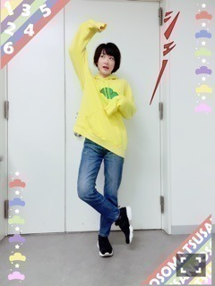
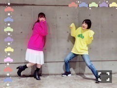

平成二十八年熊本地震
テレビのニュースで毎日報道されています。
被災された皆様が１日でも早く安心した生活をむかえる事が出来ます様に。
乃木坂46の握手会会場に募金箱を設置しました
会場に来てくださった皆様募金ありがとうございます。
私も微力ではありますが支えになればと気持ちを入れてきました！
皆さんが元気を出せる様に私も協力できる事を考えて届けたいと思います！
昨日、今日と
乃木坂46 14枚目シングル
ハルジオンが咲く頃の全国握手会と個別握手会がありました！
来てくださった皆様ありがとうございました！
昨日の全国握手会は、体調不良により、握手会は欠席してしまいました(´；ω；｀)
ペアのひなちゃんごめんね〜(´；ω；｀)
生駒ちゃんに会いたいと並んで待って下さっていた皆さんお待たせした上に欠席してしまいすみませんでした(´；ω；｀)
でもお陰で今日は元気に回復致しました！
おそ松さんパーカーを着用して出ましたヽ(・∀・)ノ
十四松〜ヽ(・∀・)ノ

十四松〜ヽ(・∀・)ノ

まっちゅんはトッティー！
お互いトド松と十四松を意識したポージング
来てくださった皆さんの中にもチラホラいらっしゃいましたね(＾ω＾)
コープスパーティー
じょしらく
ハルジオン
出演したテレビ
などのお話しが多かったですね
あとこれから受験勉強頑張ります！
とか
合格しましたヽ(・∀・)ノ
1年ぶりに来れました〜！
と嬉しい報告があったり(＾ω＾)
皆さん新生活始まって、忙しいと思いますが身体に気をつけて下さいね(＾ω＾)
あ〜
お風呂浸かりたいけど、まだ浸かれない〜
もうひと頑張り！！
へばなっ☆彡